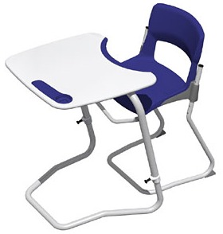

|
Ürün
geliþtirme ve hýzlý prototip imalatý konusunda hizmetler sunan
Rapitypes firmasý, Ýngiltere'de
Stage
Systems tarafýndan Q-learn Range markasýyla küçük
yaþtaki öðrenciler için üretilen yüksekliði
ayarlanabilir, ergonomik, yenilikçi sýnýf mobilyasýnýn
geliþimine prototip imalatý, testi ve seri imalat kalýplarýnýn
yapýmýna kadar geçen aþamalarda katkýda bulundu.
Q-Learn:
Stage
systems tarafýndan üretilen Q-Learn Range sýnýflarda çocuklarýn
ve gençlerin kiþisel ihtiyaçlarýnda kullanýlan mobilyalara
tamamen yeni bir yaklaþým getirdi. Netice itibariyle, þu an
çoðu okulda kullanýlan standart PP sandalye ve lamine masalara
göre büyük avantajlar saðlanýyor.
Özellikle
Q-Learn'ün ergonomik dizayný ve ayarlanabilirliði (masanýn
eðimi dahil), yaþlarý ve beden yapýlarý her ne olursa olsun
öðrencilerin saðlýklarý ve konsantrasyonlarý için en iyisini
saðlýyor.
Ýngiltere'de
10 milyon civarýnda öðrencinin kötü dizayn ve kullanýlan ekipmanýn
esnekliðe izin vermemesi nedeniyle kendi vücut yapýlarýna
uymayan ve ergonomik olmayan masalarda ve sýralarda çalýþtýklarý
tespit edilmiþtir.
Ayrýca,
boyut gereksinimlerini saðlamak amacýyla yarým düzine farklý
deðiþken kullanmak yerine, Q-Learn masa ve sandalyeleri ayarlanabilir
þekildedir, tüm ilkokul gereksinimini saðlayacak þekildedir.
Ayrýca bu mobilya Avrupa'da yeni CEN standartlarýný karþýlamak
için dizayn edilen (akabinde lisanslanmýþ) ilk mobilyadýr,
birkaç yýl içinde bütün okullar bu CEN standartýný almak zorunda
kalacaklardýr.
Çok-disiplinli
tasarým:
Rapitypes,
çok-disiplinli tasarým çalýþmalarýnýn özelliði olarak tüm
avantajlarý içinde barýndýran uygun ve kolay imal edilebilen
bir tasarým için çalýþýyordu. "Prototip kapasitemizin
yanýnda modern malzeme ve üretim metotlarýnýn kullanýldýðý
bir projeye baþladýk." diyor fabrika müdürü Paula Jones.
Mesela,
Q-learn sandalyeleri gerekli formu saðlayan eðimli çelik boru
iskeleti, yenilikçi sandalye bünyesinde kayan, çelik boru
tabanlý çerçeveyi kapsar. Yüksek kalitede kayýn aðacýndan
yapýlmýþ koltuk ve arka kalýplara baðlý cam elyafý takviyeli
Nylon destek parçalarýndan yapýlmýþtýr.
Bu
destekler detaylý bir tasarým aþamasý, malzeme seçimi ve gerekli
yük taþýma kapasitesini daðýtan Sonlu Elemanlar Analizi (FEA)
içeren üretim aþamasýndan sonra geliþtirilmiþtir. Genel olarak
tüm oturma yapýsý, okul ortamý ihtiyaçlarýna cevap veren sert
ve saðlam sandalye yapýsýný elde etmek içindir.
Masa
baþlýca boyu ayarlanabilir çelik boru iskeletten ve kayýn
aðacýndan þekillendirilmiþ masaüstünden oluþur. Yukarýsýnda
eðim kilitleme sistemli bir mekanizma vardýr. Bu mekanizma
ayarlanabilir þekildedir, eðim deðiþtirilebilir örneðin bilgisayar
kullanýmý için düz bir þekilde kullanýlýrken, 12.5 dan 20
dereceye kadar yazma ve çizme iþler için önerilir. Boy ayarlamasý
yapýlmasý ve eðim mekanizmasýnýn kullanýlmasý kullaným kolaylýðý
yanýnda malzemeye uzun ömür saðlar. Bu yüzden, malzeme seçimi,
üretim deðerlendirmesi ve prototip bileþenleri doðru karar
vermede önemli rol oynar.
Fonksiyonel
prototip yapým aþamasý:
Rapitypes,
tasarým aþamasý bitince, son prototiplerin önemli parçalarýný
SLS
(Selective Laser Sintering - Seçmeli Lazer Sinterlemesi) teknolojisini
kullanan bir otoinþa
cihazýyla üretmiþtir. Bu þekilde parçalarýn malzeme özellikleri
seçilen üretim malzemesine yakýn oluyor ve böylece parçalar
zor koþullarda test edilebiliyor. Rapitypes ayrýca boru ve
tüp üreticiysiyle de çalýþarak tüm ürünün çalýþýr son prototipini
oluþturdu.
Prototipler
müþteri tarafýndan onaylandýktan, test edildikten ve FIRA
tarafýndan onaylandýktan sonra yüksek hýzlý CNC tezgahlar
kullanýlarak alüminyum plastik enjeksiyon kalýplarý üretildi.
Ardýndan plastik parçalarý %45 GFPA (cam elyaf takviyeli Nylon)
ve mineral dolu PP (Poliproplen) kullanýlarak üretilmeye baþlandý.
Zamanýnda
tasarlanýp piyasaya sürülen, yeni CEM standardý dahil gerekli
tüm performans kriterlerini karþýlayan Q-Learn artýk baþarýlý
bir gelcek için hazýr görünüyor. Stage Systems'in genel müdürü
Anthony Hill þöyle diyor: "Ürün çok büyük ilgi ve hevesle
üretildi. Ürün Eðitim otoriteleri, özel okullar ve okul mimarlarý
tarafýndan çok büyük ilgi gördü ve 1000'den fazla sandalye
þimdiden üretilmiþ durumda".
Daha
fazla bilgi için:
|